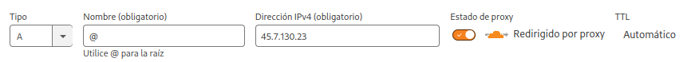

Despliegue básico de Django con Docker, Traefik y CloudFlare
En el momento del despliegue de aplicaciones Django se pueden optar por diversas opciones desde la clásica con una VPS, pasando por Heroku, AWS o bien Docker.
En esta entrada voy a explicar cual es el método que aplico yo para desplegar una aplicación Django utilizando mi combinación ganadora en una VPS:
- Docker
- Traefik
- CloudFlare
Es un tutorial que se puede tornar confuso y complejo si no tenés mucha experiencia con el manejo de Docker. Tambien implica tener funcionando correctamente Traefik. En este enlace les dejo la configuración que uso yo. Sugiero que lo lean y en todo caso vean como lo adaptan a sus implementaciones.
La Previa#
Lo primero que debemos definir es que comprende nuestra aplicación Django:
- Base de datos
- Manejo de estáticos
- Etc.
Para este caso vamos a suponer que la aplicación tiene los estáticos comunes y corrientes, y que a su vez usa una base de datos PostgreSQL.
Tendremos una estructura básica de proyecto Django del tipo:
/unaapp
/miproyecto
manage.py
requirements.txt
Metiendo las manos en el barro#
Supongo que ya estás con tu ambiente activado y en la carpeta raíz del proyecto, si no es así, activalo ahora mismo porque vamos a instalar gunicorn, django-environ y whitenoise:
pip install gunicorn django-environ whitenoise
Freezamos las dependencias:
pip freeze > requirements.txt
Dockerfile#
Vamos a definir el Dockerfile que generará la imagen de nuestro proyecto, para ellos creamos un archivo Dockerfile con el siguiente contenido:
FROM python:3.11.0-alpine3.17
ENV PYTHONUNBUFFERED=1
RUN apk update \
&& apk add --no-cache gcc musl-dev python3-dev libffi-dev \
&& pip install --upgrade pip
COPY ./requirements.txt ./
RUN pip install -r requirements.txt
ADD . ./app
WORKDIR /app
# RUN python manage.py migrate
# RUN python manage.py collectstatic --noinput
CMD ["gunicorn", "--bind", ":8000", "--workers", "2", "miproyecto.wsgi:application"]
EXPOSE 8000
Observen la anteúltima línea en la que damos entrada a gunicorn: el «miproyecto» es el nombre de nuestro proyecto. Seguramente el nombre de tu proyecto no es «miproyecto», cambialo por el tuyo. La cantidad de workers es igual a la cantidad de núcleos del procesador (No es regla general, hay que tener criterio y de última hacer pruebas de carga, pero para empezar está bien) 😛
docker-compose.yml (Solo por puertos, sin traefik)#
Para empezar a laburar vamos a hacer una prueba sin Traefik, solo con puertos para comprobar que todo esté funcionando bien.
El modelo que sugiero es el siguiente:
# networks:
# traefik:
# external: true
services:
db:
image: postgres:15.2-alpine
environment:
POSTGRES_USER: ${USER_DB}
POSTGRES_PASSWORD: ${PASSWORD_DB}
POSTGRES_DB: ${NAME_DB}
volumes:
- postgresql:/var/lib/postgresql/data
networks:
- default
app:
build:
context: .
dockerfile: Dockerfile
image: valorarte
ports:
- "8000:8000"
networks:
- default
depends_on:
- db
restart: always
# - traefik
# labels:
# - traefik.enable=true
# - traefik.docker.network=traefik
# - traefik.http.routers.${TRAEFIK_NAME}.rule=Host(`${DOMAIN}`)||Host(`www.${DOMAIN}`)
# - traefik.http.routers.${TRAEFIK_NAME}.entrypoints=http
# - traefik.http.services.${TRAEFIK_NAME}-svc.loadbalancer.server.port=8000
volumes:
postgresql:
Como verán en ese archivo tenemos variables de entorno para el servicio db y las labels de traefik(Las que están comentadas porque estamos en local), las cuales definiremos junto a otras que usaremos después en un archivo .env
SECRET_KEY=fa3u)zsxpl-xj5kswm48dd&(#v!lv^h!pej9zr_41v!_w#%0+w
PRODUCTION=False
TRAEFIK_NAME=miproyecto
DOMAIN=proyecto.tudominio.com.ar
GENERAL_DOMAIN=tudominio.com.ar
NAME_DB=tudb
USER_DB=usuariodb
PASSWORD_DB=tupassword
Si, me imagino que están ansiosos por levantar todo el stack y probar que funciona, pero hay algunos detalles que resolver relacionado con esas variables de entorno. Por defecto, uno por lo general desarrolla usando sqlite, por lo que debemos vincular Django con PostgreSQL dentro de settings.py. Para ello agregaremos las siguientes líneas:
import environ #Al principio del archivo
env = environ.Env()
env_file = os.path.join(BASE_DIR, '.env')
env.read_env(env_file)
if env('PRODUCTION') == "True":
PRODUCTION = True
else:
PRODUCTION = False
SECRET_KEY = env('SECRET_KEY')
# SECRET_KEY = '$%g!fflv0ezz*#jr%ui+3edvxx6l$ugh!6*kq(@9gsqu!7wla('
DEBUG = True
if PRODUCTION is True:
DEBUG = False
DOMAIN = env('DOMAIN')
GENERAL_DOMAIN = env('GENERAL_DOMAIN')
NAME_DB = env('NAME_DB')
USER_DB = env('USER_DB')
PASSWORD_DB = env('PASSWORD_DB')
ALLOWED_HOSTS = ["localhost", DOMAIN,
f"www.{DOMAIN}"]
CSRF_COOKIE_DOMAIN = f".{GENERAL_DOMAIN}"
CSRF_COOKIE_SECURE = True
CSRF_TRUSTED_ORIGINS = [f"https://{DOMAIN}",
f"https://www.{DOMAIN}",
f"http://{DOMAIN}",
f"http://www.{DOMAIN}",
]
DATABASES = {
'default': {
'ENGINE': 'django.db.backends.postgresql',
'NAME': NAME_DB,
'USER': USER_DB,
'PASSWORD': PASSWORD_DB,
'HOST': 'db',
'PORT': '5432',
}
}
else:
DEBUG = True
ALLOWED_HOSTS = ["*"]
DATABASES = {
'default': {
'ENGINE': 'django.db.backends.sqlite3',
'NAME': os.path.join(BASE_DIR, 'db.sqlite3'),
}
}
También debemos agregar whitenoise en los middleware:
MIDDLEWARE = [
'django.middleware.security.SecurityMiddleware',
'whitenoise.middleware.WhiteNoiseMiddleware',
'django.contrib.sessions.middleware.SessionMiddleware',
'django.middleware.common.CommonMiddleware',
'django.middleware.csrf.CsrfViewMiddleware',
'django.contrib.auth.middleware.AuthenticationMiddleware',
'django.contrib.messages.middleware.MessageMiddleware',
'django.middleware.clickjacking.XFrameOptionsMiddleware',
]
Y comprobar las rutas de los estáticos:
STATIC_ROOT = os.path.join(BASE_DIR, 'static')
Pufff, ahora si, ya tenemos listo nuestro settings.py para despliegue en local y producción vinculado a un dominio. Ahora si, si se animan pueden probar el glorioso:
docker compose up -d --build
Si todo salió bien, cuando visten en su navegador http://localhost:8000 deberían ver algo del proyecto. Digo «Algo» porque falta algunos pasitos importantes que algunos se habrán dado cuenta: Falta migrar la base de datos, colectar los estáticos y, en caso de que sea necesario, crear un superusuario.
docker compose exec app python manage.py makemigrations
docker compose exec app python manage.py migrate
docker compose exec app python manage.py collectstatic
docker compose exec app python manage.py createsuperuser
¡FELICITACIONES! Tu proyecto está dockerizado ¡Nada mal!
¡Nos vamos a Producción!#
Ya probaste que anda todo bien, ya viste que tu aplicación anda precioso en el contenedor, pero nos falta algo importante: Llevarlo a nuestra VPS y apuntarlo al dominio de alguna forma.

Y la encriptación debe estar en Flexible

Ya tenemos el dominio apuntado, solo nos falta desplegar el proyecto en la VPS. 🙂
Despliegue en VPS#
Obviamente tenemos que entrar a la VPS de alguna forma y no es objeto del presente tutorial abordar ese tema, por lo que voy a suponer que ya estás en la VPS, que la misma tiene docker instalado y traefik corriendo de forma correcta.
Si tenés el proyecto en Git, lo tendrás que clonar en algún lugar. También supongo que configuraste bien tu repo y dentro del .gitignore filtraste toda la data sensible (Entre ellos el .env de desarrollo ;)) o particular de la ejecución. Si no es así, es un buen momento para que le pegues una segunda mirada a todo.
Dentro de la carpeta del proyecto crearemos un nuevo .env con el contenido similar al anterior:
SECRET_KEY=qhkz_4!jjq&!*r-g2ijutl_4fj8x50ls=v0^6)ej18-e!zqdzq
PRODUCTION=True
TRAEFIK_NAME=miproyecto
DOMAIN=proyecto.tudominio.com.ar
GENERAL_DOMAIN=tudominio.com.ar
NAME_DB=tudb
USER_DB=usuariodb
PASSWORD_DB=tupassword
Allí verán que PRODUCTION pasó a True por lo que ahora si usará PostgreSQL, se vinculará al dominio y se definirán otros parámetros para que todo funcione pipí cucú.
En el compose DESCOMENTAMOS Todo lo que estaba comentado, por lo que el archivo quedará algo así:
networks:
traefik:
external: true
services:
db:
image: postgres:15.2-alpine
environment:
POSTGRES_USER: ${USER_DB}
POSTGRES_PASSWORD: ${PASSWORD_DB}
POSTGRES_DB: ${NAME_DB}
volumes:
- postgresql:/var/lib/postgresql/data
networks:
- default
app:
build:
context: .
dockerfile: Dockerfile
image: lupin
ports:
- "8000:8000"
networks:
- default
- traefik
depends_on:
- db
restart: always
labels:
- traefik.enable=true
- traefik.docker.network=traefik
- traefik.http.routers.${TRAEFIK_NAME}.rule=Host(`${DOMAIN}`)||Host(`www.${DOMAIN}`)
- traefik.http.routers.${TRAEFIK_NAME}.entrypoints=http
- traefik.http.services.${TRAEFIK_NAME}-svc.loadbalancer.server.port=8000
volumes:
postgresql:
Si todo está bien, entonces llegó el momento de…
docker compose up -d --build
Vayan al dominio y deberían ver algo relacionado con su Proyecto. 🙂
Si es así ¡Felicitaciones! Ahora pueden hacer las migraciones, colectar los estáticos, crear el superuser y disfrutar. 🙂